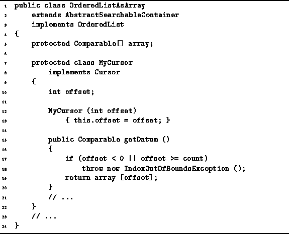

Data Structures and Algorithms
with Object-Oriented Design Patterns in Java
Data Structures and Algorithms
with Object-Oriented Design Patterns in Java
As shown in Program  ,
objects that implement the Cursor interface
can be used to access, insert, and delete objects in an ordered list.
Program defines an inner class
called OrderedListAsArray.MyCursor
that implements the Cursor interface.
The idea is that instances of this inner class
are used by the OrderedListAsArray class to represent
the abstraction of a position in an ordered list.
,
objects that implement the Cursor interface
can be used to access, insert, and delete objects in an ordered list.
Program defines an inner class
called OrderedListAsArray.MyCursor
that implements the Cursor interface.
The idea is that instances of this inner class
are used by the OrderedListAsArray class to represent
the abstraction of a position in an ordered list.

Program: OrderedListAsArray.MyCursor class.
The MyCursor class has a single field, offset,
that is used to record an offset in the array of objects.
A single constructor is provided which simply
assigns a given value to the offset field.
Program also defines the getDatum method
of the MyCursor class.
This method simply returns the item in the array
at the position record in the offset field,
provided that position is valid.
The running time of the getDatum method is simply O(1).
 Copyright © 1998 by Bruno R. Preiss, P.Eng. All rights reserved.
Copyright © 1998 by Bruno R. Preiss, P.Eng. All rights reserved.